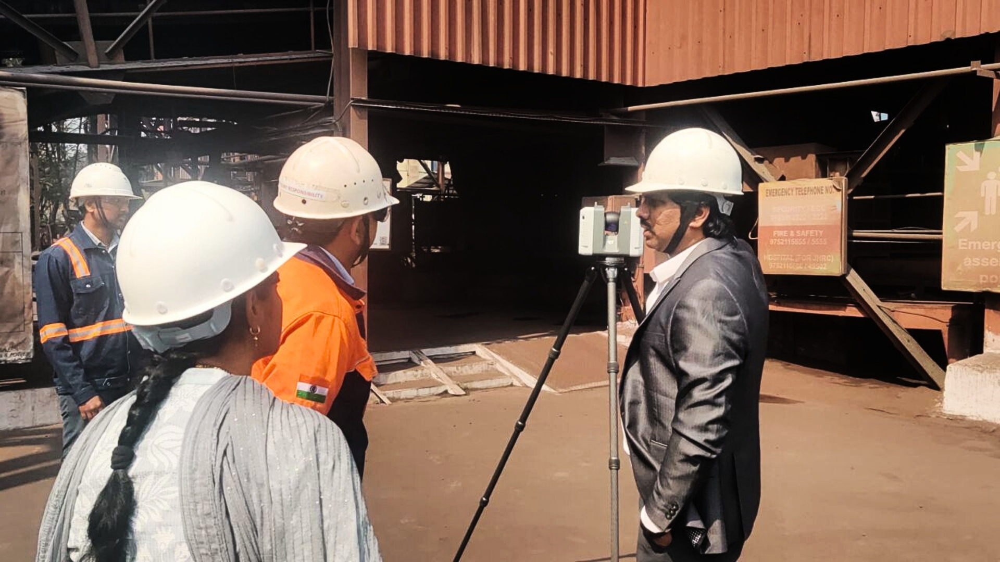
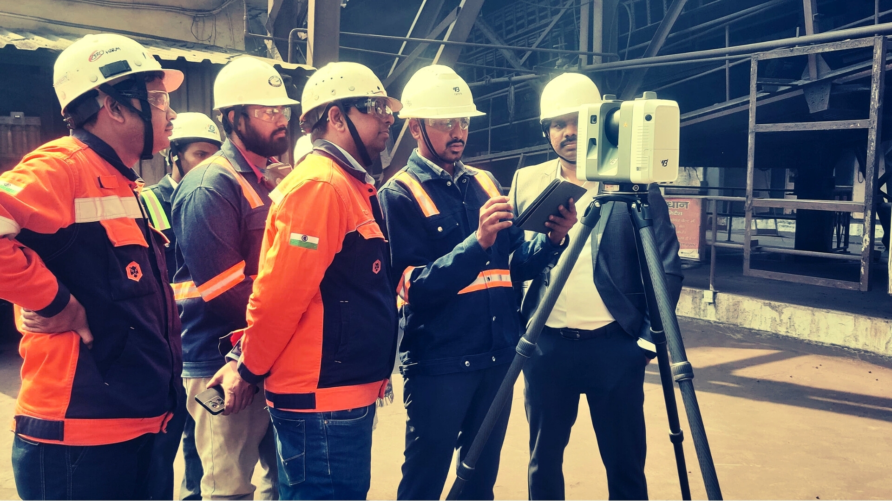
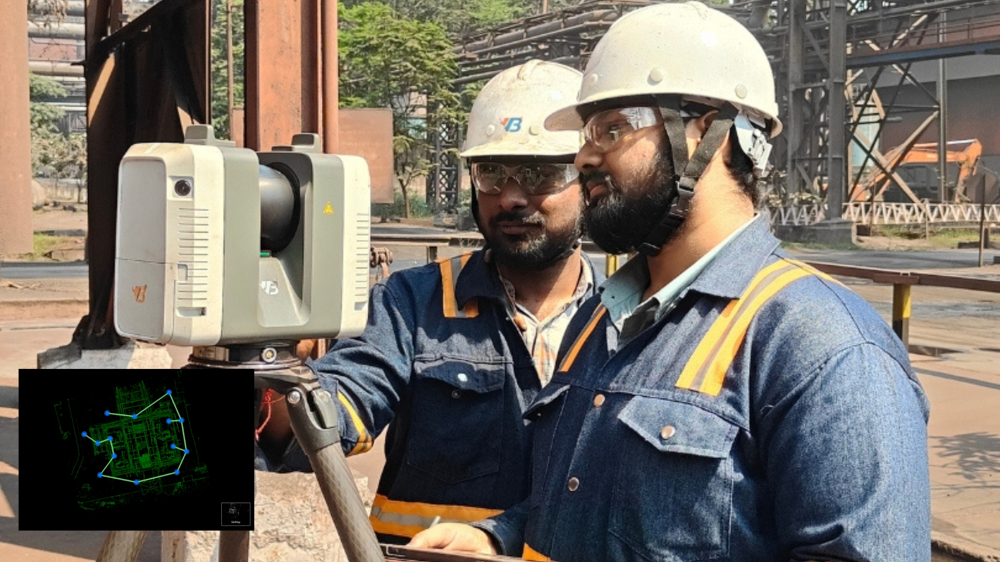
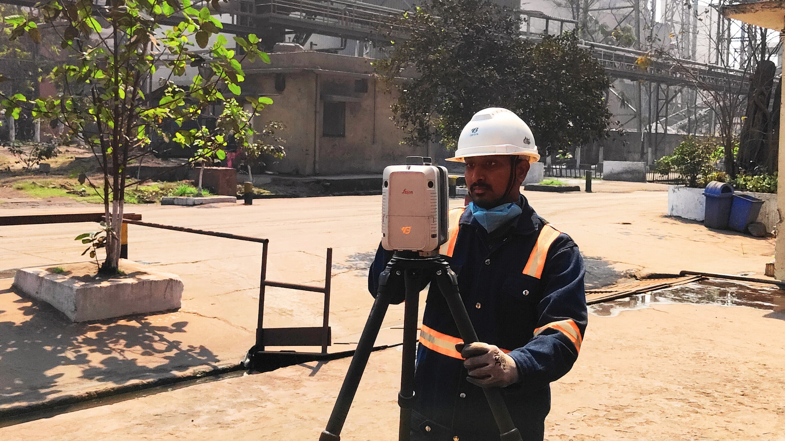
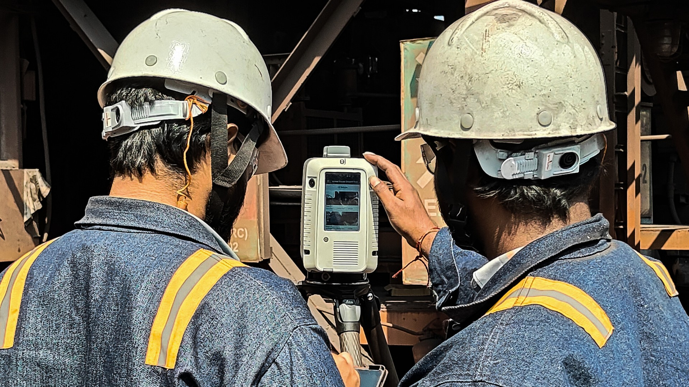
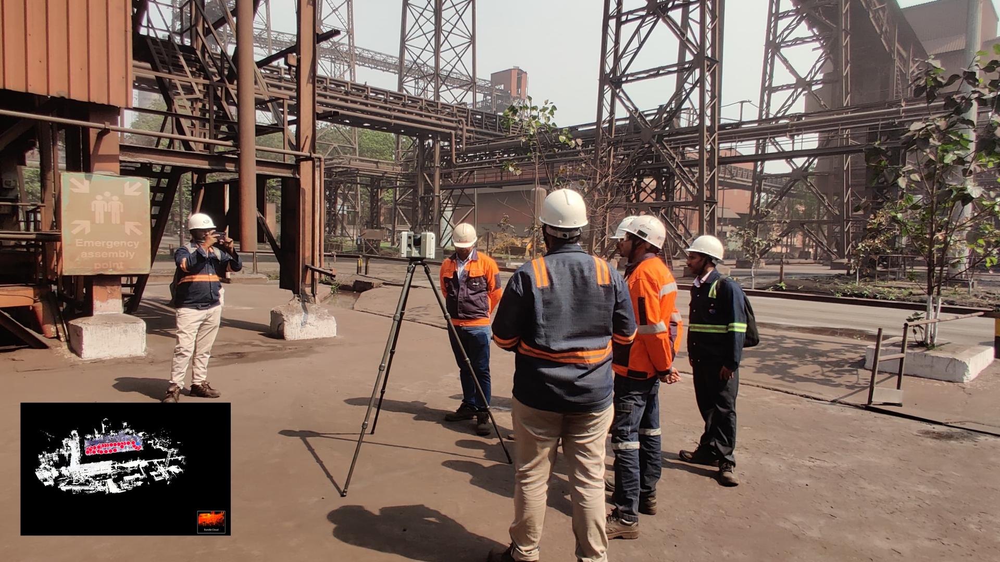
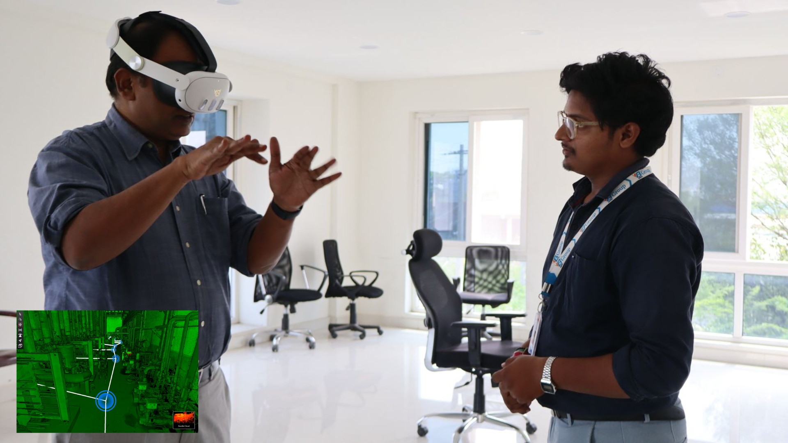
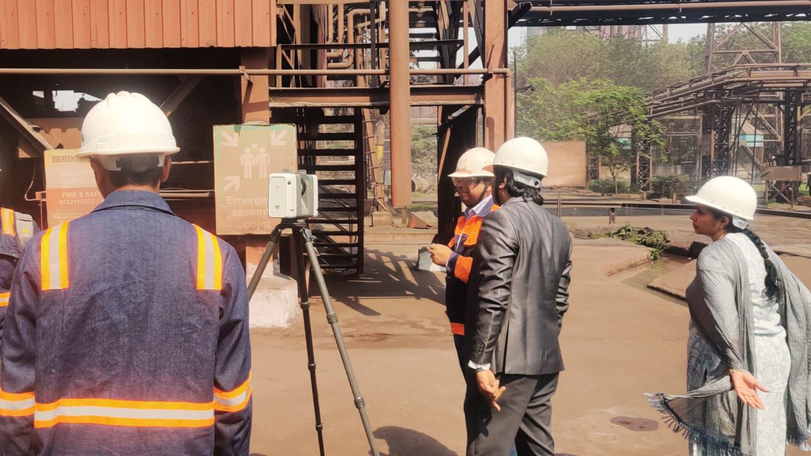

Project Management, Reimagined through Precision & Technology
We bridge the gap between complex engineering and seamless execution. Your trusted partner for end-to-end Project Management Consultancy (PMC).
Project Management Consultancy for the Digital Era
At VB Group, we redefine Project Management Consultancy (PMC) by combining deep engineering expertise with intelligent, data-driven project controls. Successful projects today demand more than supervision – they require rigorous planning, transparent reporting, and advanced digital tools at every stage.
Moving beyond the traditional role of an overseer, we act as your strategic project partner. By integrating LiDAR-based reality capture, Scan-to-BIM workflows, Digital Twin technology and smart dashboards, we ensure projects are delivered on time, within budget, and to defined performance KPIs. Complex visions become safe, buildable and sustainable assets.
End-to-End Project Management Consultancy Services
We provide comprehensive oversight across the entire project lifecycle—from concept and design to commissioning and handover.
Strategic Planning & Feasibility
- Project conceptualisation, technical due diligence and feasibility studies.
- Budget forecasting, cash-flow planning and risk assessment.
- Resource planning, stakeholder mapping and project charter preparation.
Execution & Construction Management
- On-site leadership for EPC / EPCM / turnkey projects.
- Contractor management, interface coordination and progress tracking.
- Daily issue resolution and escalation management to maintain execution momentum.


Tech-Driven Quality Assurance (Third-Party Inspection)
Quality is powered by technology. Our Tech-Driven TPI (Third-Party Inspection) uses 360° LiDAR scanning, Scan-to-BIM and Digital Twin models to measure what’s built, not just what’s planned.
- Real-time comparison of as-built vs. as-designed models with millimetre-level accuracy.
- Automated tolerance checks for civil, structural and MEP elements.
- Digital QA/QC reports with photographic and point-cloud evidence.
Cost & Contract Management
- BoQ validation, quantity surveying and verification of contractor bills.
- Change order management and variation claim assessment.
- Transparent cost control, cost-to-complete forecasting and commercial risk mitigation.
HSE (Health, Safety & Environment) Leadership
- Establishment of HSE plans, method statements and job safety analyses.
- Behavior-based safety culture, toolbox talks and digital incident reporting.
- Compliance with global HSE standards and client-specific safety protocols to drive a zero-harm culture.
Industries We Serve
Our PMC frameworks are scalable and field-tested across complex, multi-stakeholder environments.
Heavy Engineering & Manufacturing
End-to-end management of new plants, brownfield expansions and debottlenecking projects for steel, process, chemical, textile, paper, cement and other heavy industries.
Infrastructure & Utilities
Project management for roads, water treatment, gas and power distribution networks, including integration of buried utilities and long-corridor infrastructure.
Commercial & Institutional
Delivery of high-rise towers, IT parks, campuses, hospitals and educational facilities with an emphasis on aesthetics, functionality, sustainability and user experience.
Energy & Renewables
Specialised PMC for power plants, solar parks, wind farms and hybrid energy systems, with a focus on reliability, grid readiness and long-term O&M performance.


The VB Group Advantage
Why asset owners and EPC leaders trust us with their most critical projects.
The Digital Edge
We don’t guess – we scan and measure. By combining LiDAR, 3D laser scanning, point-cloud processing, BIM and Digital Twins, we provide data-backed insights that traditional consultants simply cannot offer.
Total Transparency
Interactive dashboards and visual progress reports give you 24/7 visibility into schedule, cost, quality and safety KPIs—whether you are on-site or remote.
Agile & Proactive Methodology
Our risk-first project management approach identifies issues early, runs what-if scenarios and implements mitigation plans before they impact time or cost.
Tailored Delivery Models
No two projects are identical. We tailor teams, governance structures and reporting frequencies to your organisation’s technical complexity, geography and culture.
Digital Quality Assurance with 360° LiDAR Scanning
VB Group’s Digital QA/QC framework replaces manual measurements and isolated visual checks with continuous, high-fidelity reality capture. Using 360° LiDAR scanners, we build a detailed digital record of your site that supports design validation, progress monitoring and audits.
1. Weekly As-Built vs. As-Designed Verification
- Deployment of terrestrial 3D laser / LiDAR scanners to capture high-density point clouds of civil, structural and MEP works.
- Overlay of scan data on BIM / CAD models to highlight deviations in verticality, alignment, levels and tolerances.
- Objective, millimetre-accurate records that support faster approvals and reduced disputes.


2. Immersive Virtual Site Walkthroughs
- Creation of a photorealistic Digital Twin of the project site.
- Stakeholders can remotely “walk through” the facility, review punch points and approve workfronts from anywhere in the world.
- Significantly lower travel time and quicker decision-making for global and multi-location teams.
3. Automated Quantity Estimation & Billing Support
- Volumetric analysis using scan data for earthworks, concrete pours, backfilling and stockpiles.
- High-accuracy quantity verification that supports fair, transparent and dispute-free billing certification.
- Elimination of manual measurement errors and repeated re-measurements.
4. Clash Detection & Pre-emptive Rectification
- Early detection of clashes between structure and MEP systems using as-built scans vs. coordination models.
- Design corrections before installation, reducing rework, material wastage and schedule slippage.
- Improved constructability and greater confidence at every stage gate.
Key Value Drivers
- 100% Coverage: Millions of data points ensure no corner is left unchecked.
- Audit-Ready Records: Time-stamped digital history of the project’s evolution.
- Enhanced Safety: Reduced need for inspectors to access hazardous or difficult-to-reach areas.
Ready to Reimagine Your Project Management?
Whether you are planning a greenfield plant, upgrading critical infrastructure or building a next-generation commercial facility, VB Group brings precision, technology and accountability to every milestone.

Need more information?

Project Management Consultancy (PMC) – FAQs
What is Project Management Consultancy (PMC) in construction?
PMC is a specialised service where an independent consultant manages planning, design coordination, procurement, construction, quality, safety and close-out on behalf of the project owner. The objective is to protect the owner’s interests and ensure the project is delivered as per scope, cost and schedule.
How does LiDAR scanning improve construction quality control?
LiDAR and 3D laser scanning capture the exact as-built condition of the site in the form of a point cloud. This data is compared against BIM or CAD models to verify tolerances, detect clashes and quantify work done, enabling more accurate, real-time QA/QC than traditional manual checks.
What types of projects does VB Group support?
We support industrial plants, infrastructure and utilities, energy and renewables projects, as well as commercial and institutional developments—across greenfield, brownfield and expansion scenarios.
Can VB Group integrate with our existing EPC or design partners?
Yes. We frequently operate in multi-stakeholder environments and integrate with your EPC, designers, OEMs and contractors to create a unified project governance and reporting framework.